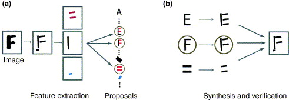

Research¶
The Computational Vision Lab combines computational theory with behavioral and brain image experiments to understand how we see the world around us.
Methodologies¶
- psychophysics
- functional magnetic resonance (fMRI) brain imaging
- neurophysiology
- computational modeling
- computer vision and machine learning
- theoretical neuroscience
Topics of study¶
- natural scenes
- perceptual organization
- object perception
- cortical processing
- hierarchical generative models
- predictive coding
Phenomena of interest¶
- shape
- color
- surface material
- visual flow
What is computational vision?¶
Vision is used for recognition, planning and motor actions. Exactly how to get from the retinal image intensities to useful actions is a tough problem requiring multiple approaches. A major theoretical challenge is to discover the computational principles required to infer world properties and determine motor output from images. Computational vision searches for these solutions. The empirical challenge is to discover how our visual systems and those of other animals are built to achieve useful actions from the images received. Psychophysics, neurophysiology and brain imaging provide tools to investigate how the visual pathways of the brain transform image information into useful plans and action. Our research addresses problems of vision using computational, psychophysical, and brain imaging approaches.
Vision as statistical inference Bayesian approaches¶
Bayesian approaches have enjoyed a great deal of recent success in their application to problems in computer vision. This success has led to an emerging interest in applying Bayesian methods to modeling human visual perception.
We consider the implications of a Bayesian view of visual information processing for experimentally investigating human visual perception. We have outlined the elements of a general program of empirical research which results from taking the basic Bayesian formulation seriously not only as a means for objectively modeling image information through ideal observer analysis (e.g. see our work in object recognition), but also as a framework for characterizing human perceptual inference. A major advantage of following such a program is that, because its structure is the same as that of the Bayesian framework for computational modeling, it supports a strong integration of psychophysics and computational theory. In particular, it provides the foundation for a psychophysics of constraints in which one tests hypotheses regarding quantitative and qualitative constraints used in human perceptual inferences. The Bayesian approach also suggests new ways to conceptualize the general problem of perception and to decompose it into isolatable parts for psychophysical investigation; that is, it not only provides a framework for modeling solutions to specific perceptual problems; it also guides the definition of the problems.
Analysis by synthesis

Analysis by synthesis. (a) Low-level processing can extract edge features, such as bars, and use conjunctions of these features to make bottom-up proposals to access the higher-level models of objects. (b) The high-level objects access the image top-down to validate or reject the bottom-up proposals. In this example, the low-level cues propose that the image can be interpreted as an E, an F, or a set of parallel bars. But interpreting it as an F explains almost all the features in the image and is preferred.1
-
Alan Yuille and Daniel Kersten. Vision as bayesian inference: analysis by synthesis? Trends in cognitive sciences, 107:301–308, 2006. doi:10.1016/j.tics.2006.05.002. ↩